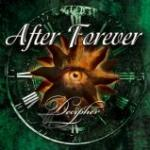

|
|
||
After Forever : Decipher (2001) |
|

http://www.afterforever.com |
1. Ex Cathedra 2:02 |
8.8/10 |
|
Dos violines, una viola, un violonchelo, un oboe, una cítara, un coro de cuatro personas y un tenor han empleado After Forever para grabar "Decipher", su segundo álbum. Metal gótico profundo, complejo, evocador, triste y oscuro. Floor Jansen, la solista femenina, es un hada perdida en una encrucijada habitada por criaturas malévolas, voces del abismo, violines melancólicos, a veces temerosos, guitarras aplastantes, teclados melodiosos y coros mayestáticos. "Decipher" es un disco que lo combina todo con acierto, los diferentos ritmos, los instrumentos, las melodías, las voces, para crear un ambiente lúgubre y tenso, de esperanzas que nacen y se apagan en un soplo de viento, de resignación, de rabia contenida y de tristeza. Todo delicadeza y todo furia, dolor e impotencia. Un placer para escuchar en una tarde de lluvia, menos creible y menos entendible cuando luce el sol... "Ex Cathedra" comienza el disco con un triste sonido de cuerda que marca el tono para el resto del álbum. Pero de pronto, aparece la voz de Floor Jansen, y el coro, y comienza la lucha, lucha que Floor sabe que no puede ganar... "Monolith of Doubt" da entrada a las guitarras y la batería. La voz de Floor en primer plano, destaca con su claridad y su fuerza de soprano, pero las voces oscuras la acompañan durante toda la canción. Los instrumentos de cuerda apoyan la melodía integrándose perfectamente con los teclados. Incluso aparece un violín como instrumento solista, acompañanando a Floor durante un trozo. La cítara aparece en "My Pledge of Allegiance #1" trayendo sonidos del desierto. La mujer lucha para escapar de su marido, en una cultura que no le otorga ninguna libertad. Quizás esta vez lo conseguirá... "Emphasis" recupera la fuerza, a base de doble bombo, y guitarra, para ayudar a Floor en una lucha para dirigir su propia vida, acompañada del coro en la que se convierte en la canción más atmosférica del disco. "Intrinsic" es quizás la canción más melancólica del álbum. El oboe le da un sonido muy lúgubre, y la voz está cargada de tristeza y emoción. Al final entran las guitarras y las cuerdas para dar una nota de alegría y de esperanza. El siguiente corte, "Zenith" comienza con la oscura voz masculina dudando si es necesario mirar un poco más allá. La voz de femenina trata de convencerle de que es necesario hacerlo. De nuevo surge la esperanza, aunque bastante desesperanzada. "Estranged" es otra canción de ritmo rápido, con la batería más presente, y la melodía construida por los instrumentos de cuerda, las guitarras y los teclados. La voz oscura aparece aquí desgarradora y diabólica y el coro aparece como un elemento superior, que no va a verse envuelto en la lucha. Las partes instrumentales de esta canción, con violines, teclados y guitarras, son complejas, brillantes y están muy bien orquestadas. En la siguiente pista, "Imperfect Tenses" aparece una voz masculina clara y potente para dar el contrapunto a la voz femenina. Una canción melodiosa, delicada y quizás la menos oscura del álbum. "My Pledge of Allegiance #2" completa la historia iniciada en la tercera pista del álbum. Floor está decidida a huir, pero en el último momento, aparece su marido, voz oscura y tenebrosa acompañada por el doble bombo y los violines, que al principio no se cree lo que ve, pero que después destroza por completo su ilusión. Ella sabe que el castigo por su osadía será terrible. La pista diez, "The Key", es otra brillante muestra de la lucha entre la melodiosa voz de Floor en contraste con la áspera y terrible voz masculina, envueltos esta vez por un tétrico manto. "Forlorn Hope" termina el álbum con doble bombo, teclados lúgubres, coros, luces, sombras, y una perfecta orquestación: una triste voz que relata con dolor el horror de la Intifada. |
||
Rubén Béjar |
||